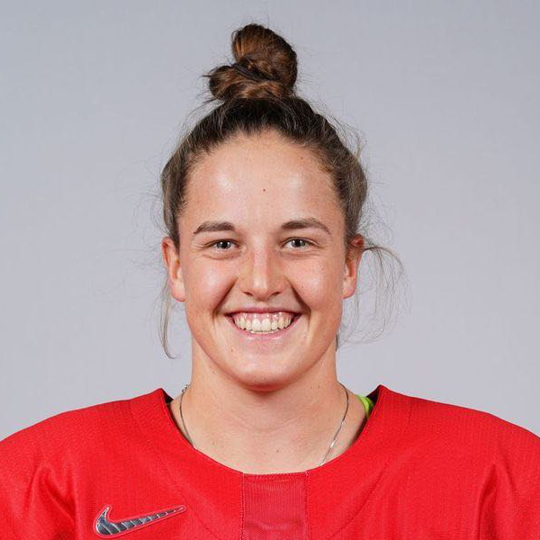

Kaleigh Quennec
Swiss Olympic Ice Hockey Team
- Injury
- Grade 3 MCL — complete distal tear, left knee
- Recommendation
- Surgical intervention. No return to play this season.
- Context
- Injury occurred 2 weeks before the Milan 2026 Winter Olympics.
- Intervention
- 5 treatments over 7 days. Full RRP® — Optimal Repair State + Precision Repair Acupuncture.
Result
Complete repair
Return to play
8 days
Bronze Medal — Milan 2026 Winter Olympics
From complete MCL tear and surgical recommendation to Olympic Bronze Medal in under two weeks.